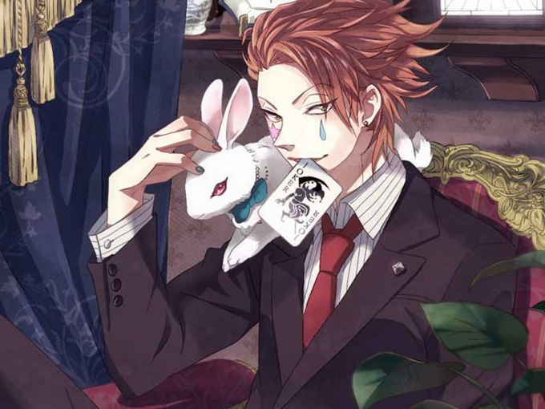

文章一级标题
文章二级标题
文章作者 文章发表时间
外貌:脸上会画有泪滴状和星星状的妆，头发经常肆意地竖起，洗澡时才会放下。容姿妖艳而性感。旧版发色前期是绿发，后期变为红发。新版只出现了红发。身材高挑，肌肉到位，细腰长腿 特性:反复无常、爱骗人、喜欢有血腥的战斗，变态,但绝对不是那种毫无理由就乱杀无辜的人。 性格: 西索时常表现出冷静、正确的判断力。不管在任何情况下，他也不会让对手看到自己的弱点。西索在天空竞技场与 卡斯特罗（又译：华石斗郎）一战就展现了他冷静的分析力和邪恶的表现力。之后篡改预言诗更让人佩服他的冷静与 大胆。西索失去冷静时即是兴致达至顶点的时候。当进入状态时，会散发出逼人的杀气。处于这种状态下的西索， 最能代表他黑暗的一面。 西索的生活目标是寻找猎物，兴趣是培养劲敌，再加以打倒。换句话说，他会寻找有战斗价值的人才，比喻为 “青涩的小苹果”，耐心地等待那人成长到有杀死的价值为止。他有着绝对的自信，始终相信自己是最强的

外貌:脸上会画有泪滴状和星星状的妆，头发经常肆意地竖起，洗澡时才会放下。容姿妖艳而性感。旧版发色前期是绿发，后期变为红发。新版只出现了红发。身材高挑，肌肉到位，细腰长腿
特性:反复无常、爱骗人、喜欢有血腥的战斗，变态,但绝对不是那种毫无理由就乱杀无辜的人。
性格:
西索时常表现出冷静、正确的判断力。不管在任何情况下，他也不会让对手看到自己的弱点。西索在天空竞技场与
卡斯特罗（又译：华石斗郎）一战就展现了他冷静的分析力和邪恶的表现力。之后篡改预言诗更让人佩服他的冷静与
大胆。西索失去冷静时即是兴致达至顶点的时候。当进入状态时，会散发出逼人的杀气。处于这种状态下的西索，
最能代表他黑暗的一面。
西索的生活目标是寻找猎物，兴趣是培养劲敌，再加以打倒。换句话说，他会寻找有战斗价值的人才，比喻为
“青涩的小苹果”(打开新窗口)，耐心地等待那人成长到有杀死的价值为止。他有着绝对的自信，始终相信自己是最强的